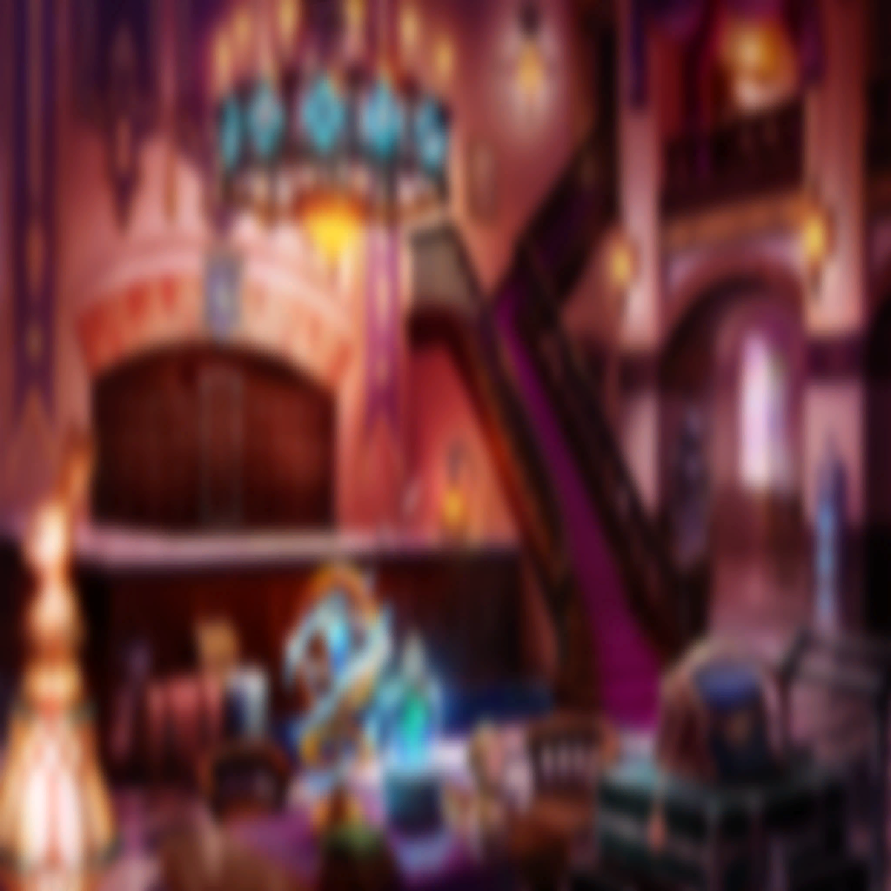

Acht

Vier

Füry
Vier
Füry
Acht
Vier
Acht
Füry
Vier
Füry
Vier
Acht
Vier
Füry
Vier


| |
| |
Acht |
Bread. |
Vier |
Oh, yes, bread. |
Füry |
So it is. Bread. |
Vier |
Wonderfully so, bread. |
Füry |
Vier. I thank you for the provisions, but...can't we have something else sometimes? |
Acht |
I like bread. |
Vier |
I knew you would, Acht. |
Acht |
It's fluffy and filling. |
Füry |
Rice can be even more filling, you know? |
Vier |
I don't think we have enough for those who complain. |
Füry |
Oh, I forgot. My lucky item of the day is bread. I just remembered how much I love bread. It's the miracle of modern science how fluffy bread can be. |
Vier |
It is quite amazing, isn't it? The yeast multiplies and then they swell... |
Acht |
Yeast... |
Vier |
It's a type of fungi. |
Füry |
I don't want to hear about that while eating. |
Vier |
Beautiful, aren't they? All things new... All things old... |
|  | |
| Ainanna | Why are our ears so long? |
| Ephylinde | You, a high elven princess, would ask that? |
| Ainanna | Won't you tell me, Ephylinde? |
| Ephylinde | There is no need to cling so close... |
| Ainanna | Hehehe, I don't want you to wander off somewhere without me is all! |
| |
| Ephylinde | The most beautiful and rare of things tend to be the most precious and valuable. |
| Ephylinde | It is said elves have always been a very delicate people. |
| Ephylinde | Especially the pure-blooded high elves, direct descendants of the Great Spirit, who are blessed with near-everlasting lifespans, but... |
| Ephylinde | Rumors spread that consuming our flesh, our undying and supposedly aesthetically pleasing organs, would grant immortality. |
| Ainanna | Hearsay with the same amount of truth as the lies of a merchant hawking "medicines" for enhancing beauty. |
| Ephylinde | That is correct, Your Highness. It is a placebo at best. |
| Ainanna | Belief can be a powerful driving force. It has consequences that go beyond mere faith. |
| Ephylinde | And so elven organs were coveted and sold at a high price. Some ingested, some displayed as ornaments... And considering the ease of hunting us... |
| Ainanna | We became hounded and slaughtered by those filthy humans. |
| |
| Ainanna | And then those giant insects swarming around the village... |
| Ephylinde | They seem to be drawn to rare Alchemia like that of Philosopher's Stones. They must perceive it as something that will help them evolve. |
| Ephylinde | The Alchemia of high elves is similarly rare, which draws them in the same way. |
| |
| Ephylinde | It is believed that elven ears evolved to better capture the intent and motive hidden within another's words because of having been under such constant threat. |
| Ephylinde | Because we are a race inherently close to Spirits, we were able to gain some powers which assist in avoiding danger. |
| Ephylinde | These powers include divination and fortune-telling. |
| Ephylinde | We then began developing communities over a long period of time in remote locations around the world to avoid being exploited by the other races. |
| Ephylinde | We improved individual magical prowess, and are now able to defend villages through— |
| |
| Ainanna | I am so bored with this. |
| Ephylinde | I-I'm sorry? |
| Ainanna | Oh, no, I don't mean I'm bored with your lecture. I'm simply tired of studying. |
| Ephylinde | Your Highness. It is unbecoming of a princess to leave in the middle of a lecture. I will not allow you to—! |
| Ainanna | Hehe, Ephylinde? Who are you speaking to? |
| Ephylinde | Wha—?! |
| Ainanna | Whoever you're talking to, it's not me! |
| Ephylinde | H-how?! I-I was speaking to this doll this entire time, thinking it was Princess Ainanna?! |
| Ainanna | How does it feel to be caught off guard? |
| Ephylinde | B-behind me?! Such advanced and precise illusion created in just a moment! |
| Ainanna | I'm over here. |
| Ephylinde | H-how are you behind me again the moment I turn around?! |
| Ainanna | Eheheh. |
| Ephylinde | More illusions?! I-I will not tolerate such misbehavior, Your Highness! |
| Ainanna | Hehehe, now that just makes it so much more entertaining. |
| Ephylinde | Ah, n-no! Stop it! I-I will not—! P-points will be deducted! This is not okay! Not okay! |
| Ainanna | Class is dismissed, Ephylinde. I'm off to take a bath now. |
| Ainanna | W-wait! |
| Ephylinde | You are not free to go yet, Your Highness. |
| Ainanna | Th-this was a straw effigy this whole time?! |
| Ephylinde | During my travels, I met personages from Wadatsumi who called themselves Ninjas. This is Position Shift, one of their arts known as ninjutsu... Or, at least an illusion made to look like it. |
| Ainanna | Such perfect timing and skill... You are very experienced with battle. |
| Ephylinde | It is better for you to know sooner rather than later that I am a merciless teacher. If you are serious about me being your personal tutor, there will be no skipping of class. Or else. |
| Ainanna | Urrrggggh! |
| Ephylinde | And so, Phantom Arts such as this were developed during the long struggle of the elven kind. |
| Ainanna | W-wait, are we continuing our lecture like this?! Even if your student can no longer concentrate?! |
| Ephylinde | Elven ears are especially sensitive, and battle techniques that could be used even against each other were developed. |
| Ephylinde | This Phantom Art uses incense saturated with spiritual energy to affect the body through the senses. |
| Ainanna | Heh. After all, an elf's potent magical prowess makes summoning a lower tier spirit to bless the incense a very simple affair. |
| Ephylinde | Phantom Arts require very little effort on the caster's part, but also are difficult to manipulate in a way to cause significant damage to their target. On top of that, getting the incense to linger for an extended period of time can be time-consuming. |
| Ephylinde | But as one grows more adept with the art, it is possible to charm an individual, keeping them in an illusion for a prolonged period of time. |
| Ainanna | Do you mean like this? |
| Ephylinde | Wh-what?! |
| Ainanna | Heheheh! This is what I call adaptability! And I can give shape to other things with the lingering incense! |
| Ephylinde | Well, well. I'm getting a little fired up now... |
| Ainanna | I will now boycott this lecture! |
| Ephylinde | Please be seated, Your Highness. |